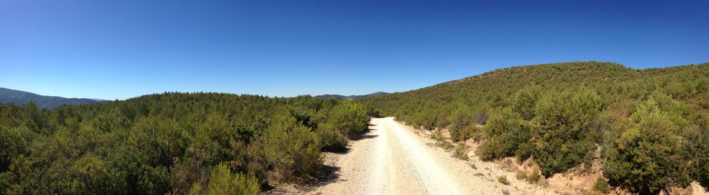

Grant Snitker

Selected Works
Articles (*Peer reviewed)
- *Snitker, Grant Agustín Diez Castillo, C. Michael Barton, Joan Bernabeu Auban, Oreto García Puchol, Salvador Pardo-Gordó
Accepted Patch-based survey methods for studying prehistoric human land-use in agriculturally modified landscapes: A case study from the Canal de Navarrés, eastern Spain. Submitted to Quaternary International.
- *Snitker, Grant
In review Identifying Natural and Anthropogenic Prehistoric Fire Regimes through Simulated Charcoal Proxy Records. Submitted to Journal of Archaeological Science.
- *Díez Castillo, Agustin, Oreto García Puchol, Joan Bernabeu Aubán, C Michael Barton, Salvador Pardo Gordò, Grant Snitker, Wendy Cegielski, and Sean Bergin.
2016 Resiliencia y cambio durante el Holoceno en la Canal de Navarrés: recientes trabajos de prospección. Archivo de Prehistoria Levantina. Vol. XXXI, Valencia, p. 169-185.
- *Erlandson, Jon M., Todd J. Braje, and Grant Snitker
2008 Two chipped stone crescents from CA-SMI-680, Cardwell Bluffs, San Miguel Island, California. Current Research in the Pleistocene. Vol. 25, 2008.
Book Chapters (*Peer reviewed)
- *Strawhacker, Colleen, Grant Snitker, Katherine Spielmann, Maryann Wasiolek, Jonathan Sandor, Ann Kinzig, and Keith Kintigh
2016 Risk Landscapes and Domesticated Landscapes: Food Security in the Salinas Province. In Landscapes, Mobilities, and Social Transformations: Arriving at the Fifteenth Century in the Pueblo Rio Grande, edited by K. Spielmann, pp. 124–150. University of Arizona Press.
Presentations and Posters (*Invited)
- *Snitker, Grant
2017 Fire, Humans, and Landscape Change: Simulating Charcoal Proxy Records to explore Anthropogenic Fire and Neolithic Landscapes in the Western Mediterranean. Paper presented at the COMSES Net Virtual Conference 2017, Tempe, AZ
- Snitker, Grant
2017 Reconstructing Anthropogenic Fire Regimes Using Multidisciplinary Methods: Preliminary Results from the Neolithic (7,700–4,500 cal. BP) in Eastern Spain. Paper presented at the 82st Annual Meeting of the Society for American Archaeology, Vancouver, B.C.
- *Strawhacker, Colleen, Grant Snitker, Keith Kintigh, Ann Kinzig and Katherine Spielmann
2017 Measuring Risk to Food Security in the Prehispanic U.S. Southwest: The Salinas Region in the Broader Southwest World. Paper presented at the 82st Annual Meeting of the Society for American Archaeology, Vancouver, B.C.
- *Snitker, Grant
2016 Fire, Humans, and Landscape Evolution: Modeling Anthropogenic Fire and Neolithic Landscapes in the Western Mediterranean. Paper presented at the 81stAnnual Meeting of the Society for American Archaeology, Orlando, FL
- *Snitker, Grant
2015 Linking the Social and Ecological Dynamics of Anthropogenic Fire Regimes through Agent-based Modeling (ABM) and Geographic Information Systems (GIS). Paper presented at the 6th Association for Fire Ecology Fire Congress, San Antonio, TX
- Diez Castillo, Agustín, Joan Bernabeu Aubán, Michael C. Barton, Oreto García Puchol, Sean Bergin, Salvador Pardo Gordó, Wendy H. Cegielski, and Grant Snitker
2014 Paperless survey? New methodological approaches to archaeological fieldwork, the case of La Canal de Navarrés (València). Paper presented at the Workshop: Dando sentido a la prospección arqueológica, Jaén, Andalucía, Spain.
- Snitker, Grant
2014 Exploring the Dynamics of Anthropogenic Fire Regimes through Agent Based Modeling (ABM) and Geographic Information Systems (GIS). Poster presented at the 79th Annual Meeting of the Society for American Archaeology, Austin, TX
- Cegielski, Wendy, Grant Snitker, Gayle Timmerman, C. Michael Barton, and Bette Otto-Bliesner
2014 Reconstructing Local Paleoclimate Data with Global and Local Variables: A Re-examination of “Downscaling” with Updated Paleoclimate Models. Poster presented at the 79th Annual Meeting of the Society for American Archaeology,Austin, TX
- *McGovern, Thomas, Jette Arneborg, Seth Brewington, Laura Comeau, Andrew Dugmore George Hambrecht, Keith Kintigh, Christian Madsen, Michelle Hegmon, Scott Ingram, Margaret Nelson Richard Oram, Matthew Peeples, Brenda Shears, Ian Simpson, Konrad Smiarowski, Grant Snitker, Katherine Spielmann, Colleen Strawhacker, Andrea Torvinen, Orri Vésteinsson.
2013 Completed Long-Term Experiments? Mobilizing Archaeology in the Anthropocene. Paper presented at the Theoretical Archaeology Group, May 9-11, Chicago, IL
- Snitker, Grant, Andrea Torvinen, and Rhian Stotts
2013 Testing the Application of Adaptive Governance of Common Pool Resources: An Archaeological Perspective. Poster presented at the 78th Annual Meeting of the Society for American Archaeology, Honolulu, HI
- *Torvinen, Andrea, Grant Snitker, and Rhian Stotts
2012 Testing the Application of Adaptive Governance of Common Pool Resources: An Archaeological Perspective. Poster presented at the 1st Annual Human Ecodynamics Research Center Open Workshop in Sustainability and Education, New York, NY
- Jenkins, Dennis L., Grant J. Snitker, Craig E. Skinner, Jennifer J. Thatcher, Thomas M. Origer, and Janine M. Loyd.
2010 Current Results of Obsidian Sourcing and Hydration Studies at the Paisley Caves, Oregon. Paper presented at the 63rd Northwest Anthropological Conference, Ellensburg, WA
Reports
- Snitker, Grant
2015 Anthropogenic Fire and Paleo-Charcoal Study at Chavez Pass, AZ: 2015 Report. Submitted to the Coconino National Forest Supervisor's Office, Flagstaff, AZ.
- Snitker, Grant
2015 A Spatial Analysis of Archaeological Sites, Vegetation, and Artifacts within the Agua Fria National Monument: Legacies on the Landscape 2013 Field Season. In Final Report of the Spring 2013 Field Season, Legacies on the Landscape: Agua Fria National Monument and Tonto National Forest, edited by Kate Spielmann, pp. 45-52. Submitted to the Bureau of Land Management, Phoenix, Arizona.
- Rivers-Cofield, Sara, Jodi Reeves Flores, Francis P. McManamon, Adam Brin, Grant Snitker, Chelsea Walter, Michael A. Smolek, and Amanda Vtipil
2014 Evaluating a Cooperative Approach to the Management of Digital Archaeological Records. Submitted to Department of Defense Legacy Resource Management Program, Proj. 13-711.
Curated Exhibits
- The Agave Research Exhibit
2012-2016 Designer and Curator, Deer Valley Petroglyph Preserve, Center for Archaeology and Society, Arizona State University, Tempe, AZ
- Looking for the Future in the Past: Archaeology's Long-Term View
2013 Exhibit Contributor and Design Collaborator, Center for Archaeology and Society, Arizona State University, Tempe, AZ
- Changing Landscapes: A Closer Look at Baby Canyon Pueblo
2012 Designer and Curator, Deer Valley Petroglyph Preserve, Center for Archaeology and Society, Arizona State University, Tempe, AZ
Scripts and Software